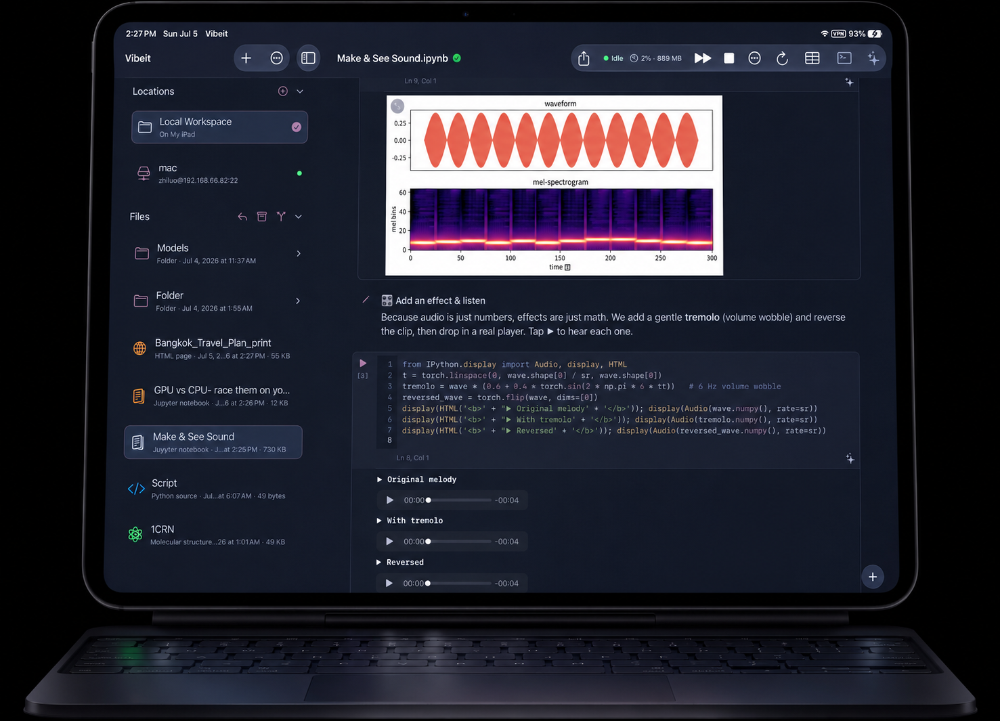

- Thai Airways lands 10:55 → Airport Rail Link / Grab to your Sukhumvit hotel, check in and lunch.
- Afternoon: ease in at Terminal 21 / EmQuartier; if energy allows, Chatuchak Weekend Market (open Sunday).


A full Python IDE with Jupyter notebooks, PyTorch on the Apple GPU, and guided lessons. Runs completely offline.
Your iPad's torch now runs on the Apple GPU (MPS). Move tensors to the GPU, check the answer matches the CPU, and time the speedup yourself.


A genuine on-device kernel, the scientific stack, an AI agent, and your own servers. No cloud required.
Jupyter-style notebooks powered by a fast on-device CPython kernel. Rich output renders inline, right where you write.
Ask about any file, generate and edit code, and preview 3D structures in place. Bring your own OpenAI or Claude key; it stays in the Keychain.

Train and run models with real MPS acceleration. NumPy, pandas, scikit-learn and OpenCV, all native.
Connect to your own servers over SSH and SFTP, then run code there without leaving the app.
Clone, edit, commit, push, and open pull requests, all on device.
The interpreter, the packages, and your notebooks all live on the device.
The whole app and every lesson, localized.
A gallery of guided lessons in seven languages: from your first plot to neural nets, physics simulations, and 3D protein structures.

from IPython.display import Audio, display
t = torch.linspace(0, wave.shape[0] / sr, wave.shape[0])
tremolo = wave * (0.6 + 0.4 * torch.sin(2 * np.pi * 6 * t))
reversed_wave = torch.flip(wave, dims=[0])
display(Audio(wave.numpy(), rate=sr))
display(Audio(tremolo.numpy(), rate=sr))
display(Audio(reversed_wave.numpy(), rate=sr))
Based on the recommended Strategy 2 route. Chatuchak Weekend Market runs only on weekends, already scheduled on suitable days.


Download a real molecular structure from the Protein Data Bank and spin it around, structural biology on your iPad.
import urllib.request
pdb_id = '1CRN' # crambin, a small fast plant protein
url = f'https://files.rcsb.org/download/{pdb_id}.pdb'
pdb = urllib.request.urlopen(url, timeout=30).read().decode()
print("fetched", pdb_id, len(pdb.splitlines()), "lines")
Every plan begins with a 7-day free trial. Cancel anytime.
Everything you need to write and run real Python on your device.
For when your work reaches past the device.
Billed monthly, quarterly, or yearly after the trial.